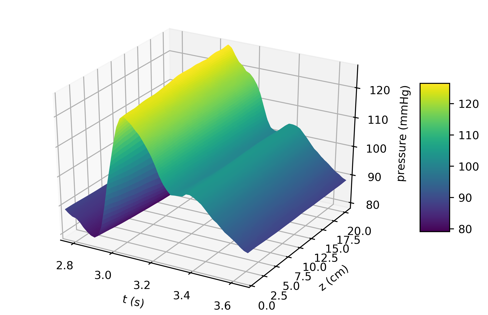
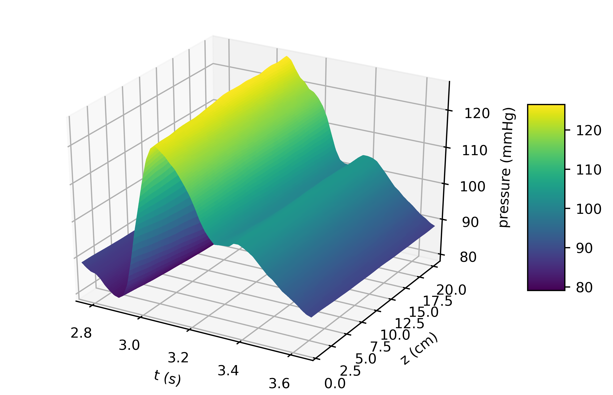

Setting up an artery simulation¶
Here, we show how an artery simulation is set up using VaMpy and explain the example files in the Git repository step by step. The example implements the simulations run by [Kolachalama2007] of the carotid bifurcation.
Every simulation requires a cfg file containing the parameters for the simulation. The file is divided into three sections, titled Files, Arteries and Simulation. Each parameter in the file is explained below in Table 1.
The file bifurcation_example.py is used as an example for running the simulation. First, parameters have to be imported from the cfg file
f, a, s = utils.read_config(param)
One variable is created for each section of the configuration file. The following two parts in bifurcation_example.py assign each parameter stored in the section variables to more intuitively named explicit variables. This step is optional, but recommended to ensure variables are not mixed up.
The inlet boundary condition has to be supplied as a function taking time as its argument. The inlet parameter points to a CSV file containing data points of the inlet over one cardiac cycle. The function inlet(qc, rc, data_dir, f_inlet) returns a function that will then be used as the inlet boundary condition. The example inlet boundary condition is
The remaining code in the simulation file initiates the relevant objects.
an = ArteryNetwork(Ru, Rd, a['lam'], k, rho, nu, p0, a['depth'], ntr, Re) creates an instance of an artery network, on which the simulation is run.
an.mesh(dx) uses the spatial step size dx to mesh arteries.
an.set_time(dt, T, tc) passes timing parameters to the simulation.
u0 = q_in(0.0) is the initial condition for the flow rate in the artery. Usually this should be the value of the inlet function q_in at time 0.0 s.
an.initial_conditions(u0) applies the initial condition to the model.
Simulations are run by calling the solver an.solve(q_in, out_args), where out_args contains the Windkessel parameters for the outlet boundary condition.
Finally, the solution variables should be returned to their dimensional state by calling an.redimensionalise(rc, qc), before exporting results using n.dump_results(run_id, f['data_dir']).
In plot_example.py the use of the functions vamplot.p3d_plot(fig_dims, suffix, plot_dir, t, P, L, pos) and vamplot.q3d_plot(fig_dims, suffix, plot_dir, t, U, L, pos) to create 3D plots of the flow rate and pressure fields is demonstrated. Provided data has been written to files in the previous steps calling python plot_example.py bifurcation.cfg creates the following plots
 

It is most important to note that the plotting function can only take a 2D data array whose dimensions have the same lengths. Therefore, the following code is used to interpolate between data points in order to change the dimension of the data arrays, such that the spatial dimension is the same length as the time dimension.
from scipy import interpolateP = np.loadtxt("%s/%s/p%d_%s.csv" % (data_dir, suffix, pos, suffix), delimiter=',')t = np.linspace(tf-T, tf, P.shape[1])x = np.linspace(0,L,P.shape[0])f = interpolate.interp2d(t, x, P, kind='linear')g = interpolate.interp2d(t, x, U, kind='linear')x = np.linspace(0, L, len(t))P = f(t, x)Table 1: Parameters used in .cfg configuration files for VaMpy.
| Files | |
| inlet | CSV file containing data points for the inlet boundary condition |
| run_id | Name for the simulation |
| data_dir | Directory to store data files |
| plot_dir | Directory to store plots |
| Arteries | |
| Ru | Upstream radii of each artery. If all radii are explicitly given they are comma-separated. |
| Rd | Downstream radii of each artery. If all radii are explicitly given they are comma-separated. |
| lam | Length-to-radius ratio of each artery. If all radii are explicitly given they are comma-separated. |
| rc | Characteristic radial scale |
| qc | Characteristic flow rate |
| rho | Density of blood |
| nu | Viscosity of blood |
| k1 | Elasticity parameter of the artery wall, see [Olufsen2000] |
| k2 | Elasticity parameter of the artery wall, see [Olufsen2000] |
| k3 | Elasticity parameter of the artery wall, see [Olufsen2000] |
| R1 | First Windkessel resistance element |
| R2 | Second Windkessel resistance element |
| Ct | Windkessel compliance |
| depth | Depth of the arterial tree |
| Simulation | |
| T | Length of a cardiac cycle |
| tc | Number of cardiac cycles to simulate |
| dt | Time step size |
| dx | Spatial step size |
References¶
| [Kolachalama2007] | Kolachalama V, Bressloff NW, Nair PB and Shearman CP (2007) Predictive Haemodynamics in a One-Dimensional Carotid Artery Bifurcation. Part I: Application to Stent Design. IEEE Transactions on Biomedical Engineering 54 (5): 802-812, doi 10.1109/TBME.2006.889188 |
| [Olufsen2000] | (1, 2, 3) Olufsen MS, Peskin CS, Kim WY, Pedersen EM, Nadim A and Larsen J (2000) Numerical Simulation and Experimental Validation of Blood Flow in Arteries with Structured-Tree Outflow Conditions 28 (11): 1281–1299, doi 10.1114/1.1326031 |